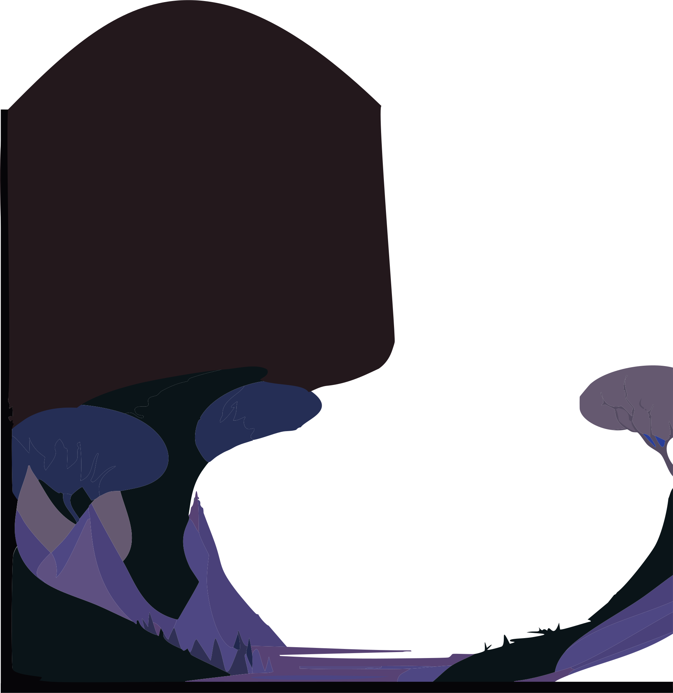

La nuit tombe...

- Animation de base
- Lune - Translation (XY)
- Lune - Rotation
- Overlay - Opacité
- scrollTrigger
- trigger = chapitre 1
- Effet parallax
Lyx plonge dans un rêve
- Animation de base
- Lune - Translation (XY)
- Lune - Rotation
- Overlay - Opacité
- scrollTrigger
- trigger = chapitre 2
- Nuage - Effet parallax
- Étoiles - DrawSVG
- Personnage - spritesheet
Un temple l'attend
- Animation de base
- scrollTrigger
- trigger = chapitre 3
- Personnage - Motion Path
La porte s'ouvre
Lyx..
Réveille-toi!

- Animation de base
- Barreaux - Translation (y)
- Barreaux - opacité
- Arriere-plan - scale
- Overlay - Opacité
- scrollTrigger
- trigger = chapitre 4
- Personnage - spritesheet
- X et crochet - Morphage
Il doit retrouver son corps
- Animation de base
- Lettres-z - Translation (XY)
- Lettres-z - Opacité
- Personnage reveillé - Translation (X)
- Personnage dors - Translation (Y)
- Personnage dors - Opacité
- Overlay - Opacité
- scrollTrigger
- trigger = chapitre 5
- Personnage reveillé - spritesheet
- Personnage dors - spritesheet
- Animation de base
- Soleil - Translation (XY)
- Soleil - Rotation
- Overlay - Opacité
- scrollTrigger
- trigger = chapitre 6
- Effet parallax
L'aube apparait